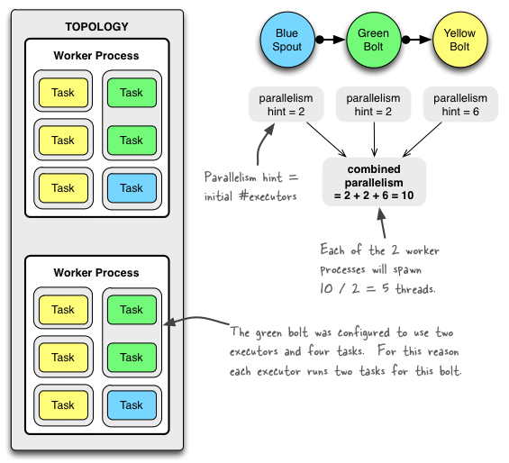

Stormは、Stormクラスタで実際にトポロジを実行するために使用される、次の3つの主なエンティティを区別します。
以下が、それらの関係を単純に図示したものです:

ワーカープロセスは、トポロジのサブセットを実行します。ワーカープロセスは特定のトポロジに属し、このトポロジの1つまたは複数のコンポーネント（SpoutまたはBolt）に対して1つまたは複数のエグゼキュータを実行できます。実行中のトポロジは、Stormクラスタ内の多くのマシンで実行されている多くのプロセスで構成されています。
エグゼキュータは、ワーカープロセスによって生成されるスレッドです。同じコンポーネント（SpoutまたはBolt）に対して1つ以上のタスクを実行することがあります。
タスクは、実際のデータ処理を実行します - アプリケーションコードで実装するSpoutまたはBoltは、クラスタ全体で多くのタスクを実行します。コンポーネントのタスクの数は、トポロジの生存期間を通じて常に同じですが、コンポーネントのエグゼキュータ（スレッド）の数は時間とともに変化します。これは、次の条件が当てはまることを意味します: #threads ≤ #tasks。デフォルトでは、タスクの数はエグゼキュータの数と同じに設定されます。つまり、Stormはスレッドごとに1つのタスクを実行します。
Stormの用語では、"parallelism"とは、コンポーネントのエグゼキュータ（スレッド）の初期数を意味し、いわゆるparallelism hintと呼ばれるものを記述するために使用されることに注意してください。このドキュメントでは、エグゼキュータの数だけでなく、ワーカープロセスの数とStormトポロジのタスク数を設定する方法を説明するために、より一般的な意味で"parallelism"という用語を使用します。Stormの狭義の"parallelism"を使用する場合、特に断りを入れます。
以下のセクションでは、さまざまな設定オプションの概要と、それらをコードで設定する方法について説明します。これらのオプションを設定する方法は複数ありますが、表の中にはそれらのオプションのうちのいくつかしか示していません。Stormは今のところ、以下の設定の優先順位を持っています: defaults.yaml < storm.yaml < トポロジ固有の設定 < 内部的なコンポーネント固有の設定 < 外部的なコンポーネント固有の設定。
setSpoutまたはsetBoltにparallelism_hintパラメータを渡します)parallelism_hintパラメータは、そのBoltのエグゼキュータの初期数（タスクではありません！）を指定するようになりました。実際に設定をしているコードスニペットの例を次に示します:
topologyBuilder.setBolt("green-bolt", new GreenBolt(), 2)
.setNumTasks(4)
.shuffleGrouping("blue-spout");
上記のコードでは、エグゼキュータ2つとそれに関連する4つをタスク数の初期値として与えて、BoltGreenBoltを実行するようにStormを設定しました。Stormはエグゼキュータ（スレッド）ごとに2つのタスクを実行します。明示的にタスク数を設定しない場合、Stormはデフォルトで実行プログラムごとに1つのタスクを実行します。
次の図は、シンプルなトポロジでどのように動作するかを示しているものです。このトポロジは、BlueSpoutと呼ばれる1つのSpuotと、GreenBoltおよびYellowBoltと呼ばれる2つのBoltの3つのコンポーネントで構成されています。これらのコンポーネントは、BlueSpoutがその出力をGreenBoltに送るように結節されています。GreenBoltはその出力をYellowBoltに送ります。

GreenBoltは上記のコードスニペットに従って設定されていましたが、BlueSpoutと YellowBoltはparallelism hint（エグゼキュータの数）のみを設定しています 関連するコードは次のとおりです:
Config conf = new Config();
conf.setNumWorkers(2); // use two worker processes
topologyBuilder.setSpout("blue-spout", new BlueSpout(), 2); // set parallelism hint to 2
topologyBuilder.setBolt("green-bolt", new GreenBolt(), 2)
.setNumTasks(4)
.shuffleGrouping("blue-spout");
topologyBuilder.setBolt("yellow-bolt", new YellowBolt(), 6)
.shuffleGrouping("green-bolt");
StormSubmitter.submitTopology(
"mytopology",
conf,
topologyBuilder.createTopology()
);
もちろん、Stormには、トポロジの並列性を制御するための追加の設定があります:
Stormのすばらしい特徴は、クラスタまたはトポロジを再起動する必要なく、ワーカープロセスやエグゼキュータの数を増減できることです。これはリバランスといいます。
トポロジをリバランスするには、次の2つの方法があります:
CLIツールの使用例を次に示します:
## Reconfigure the topology "mytopology" to use 5 worker processes,
## the spout "blue-spout" to use 3 executors and
## the bolt "yellow-bolt" to use 10 executors.
$ storm rebalance mytopology -n 5 -e blue-spout=3 -e yellow-bolt=10